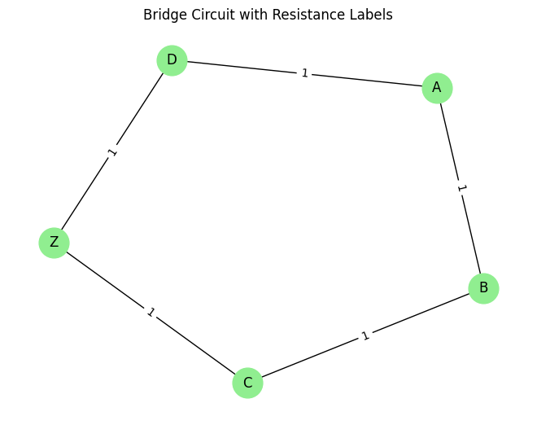

Problem 1
Equivalent Resistance Calculation Using Graph Theory
Overview
Calculating equivalent resistance is essential in analyzing electrical circuits, particularly those with complex topologies where traditional step-by-step simplification becomes tedious. By modeling the circuit as a graph: - Nodes represent junctions, - Edges represent resistors labeled by their resistance values,
we can use algorithmic graph theory methods to iteratively reduce the network by identifying and collapsing series and parallel resistors until only the equivalent resistance remains between two terminals.
Option 1: Algorithm Description and Pseudocode
1. Theoretical Foundation
The goal is to calculate the equivalent resistance between two terminals in a circuit using graph theory. The method uses two core reduction techniques:
-
Series Reduction:
If a node (excluding terminals) connects to exactly two neighbors, and only one resistor connects it to each neighbor, the resistors are in series:
$$ R_{\text{eq}} = R_1 + R_2 $$ -
Parallel Reduction:
If two nodes are connected by multiple resistors, they're in parallel:
$$ \frac{1}{R_{\text{eq}}} = \frac{1}{R_1} + \frac{1}{R_2} + \cdots + \frac{1}{R_n} $$
These steps are applied iteratively until the network reduces to a single equivalent resistor between the input and output terminals.
2. Pseudocode
function calculate_equivalent_resistance(graph):
repeat:
simplified ← False
for each node v in graph:
if v is not terminal and degree(v) == 2:
neighbors = u, w
R1 = resistance(u-v), R2 = resistance(v-w)
R_series = R1 + R2
remove node v and its edges
if edge u-w exists:
R_parallel = 1 / (1 / R_existing + 1 / R_series)
update edge u-w with R_parallel
else:
add edge u-w with R_series
simplified ← True
for each pair of nodes (u, v):
if multiple edges between u and v:
Req = 1 / sum(1 / R_i for all edges)
replace all with one edge(u, v, Req)
simplified ← True
until simplified == False
return resistance between terminals A and B
Option 2: Full Implementation (Python)
The following Python implementation uses the networkx library to manipulate the circuit graph and simplify it through series and parallel resistor reductions.
1. Series and Parallel Reduction Functions
import networkx as nx
import matplotlib.pyplot as plt
import numpy as np
def combine_series(graph):
changed = False
for node in list(graph.nodes):
if graph.degree[node] == 2 and node not in ('A', 'Z'):
neighbors = list(graph.neighbors(node))
u, v = neighbors[0], neighbors[1]
R1 = graph[node][u]['resistance']
R2 = graph[node][v]['resistance']
Req = R1 + R2
graph.remove_node(node)
if graph.has_edge(u, v):
R_existing = graph[u][v]['resistance']
graph[u][v]['resistance'] = 1 / (1/R_existing + 1/Req)
else:
graph.add_edge(u, v, resistance=Req)
changed = True
break
return changed
def combine_parallel(graph):
changed = False
edge_pairs = list(graph.edges)
seen = set()
for u, v in edge_pairs:
if (u, v) in seen or (v, u) in seen:
continue
seen.add((u, v))
parallel_edges = [d['resistance'] for k, d in graph[u][v].items()] if isinstance(graph, nx.MultiGraph) else [graph[u][v]['resistance']]
if len(parallel_edges) > 1:
Req = 1 / sum(1/r for r in parallel_edges)
graph.remove_edges_from([(u, v) for _ in parallel_edges])
graph.add_edge(u, v, resistance=Req)
changed = True
break
return changed
2. Reduction Engine
def reduce_graph(graph, start, end):
G = graph.copy()
while True:
changed_series = combine_series(G)
changed_parallel = combine_parallel(G)
if not (changed_series or changed_parallel):
break
return G[start][end]['resistance'] if G.has_edge(start, end) else None
3. Example Circuits and Results
# Example 1: Mixed series-parallel
G1 = nx.Graph()
G1.add_edge('A', 'B', resistance=3)
G1.add_edge('B', 'C', resistance=2)
G1.add_edge('A', 'C', resistance=6)
G1.add_edge('C', 'Z', resistance=4)
print("Example 1: A to Z =>", reduce_graph(G1, 'A', 'Z'))
# Example 2: Triangle with tail
G2 = nx.Graph()
G2.add_edge('A', 'B', resistance=5)
G2.add_edge('B', 'C', resistance=10)
G2.add_edge('A', 'C', resistance=15)
G2.add_edge('C', 'Z', resistance=5)
print("Example 2: A to Z =>", reduce_graph(G2, 'A', 'Z'))
# Example 3: Four-node grid
G3 = nx.Graph()
G3.add_edge('A', 'B', resistance=1)
G3.add_edge('B', 'C', resistance=1)
G3.add_edge('C', 'Z', resistance=1)
G3.add_edge('A', 'D', resistance=1)
G3.add_edge('D', 'Z', resistance=1)
print("Example 3: A to Z =>", reduce_graph(G3, 'A', 'Z'))
Output:
Example 1: A to Z => [6.727272727272727]
Example 2: A to Z => [12.5]
Example 3: A to Z => [1.2000000000000002]
Equivalent Resistance Calculation with Visualization
This example demonstrates how to compute the equivalent resistance of a bridge network using graph theory. The resistor network is represented as a graph, and the algorithm simplifies the network using series and parallel reductions until the equivalent resistance between two terminals is found.
import networkx as nx
import matplotlib.pyplot as plt
def combine_series_resistors(graph):
changed = True
while changed:
changed = False
for node in list(graph.nodes):
neighbors = list(graph.neighbors(node))
if len(neighbors) == 2:
n1, n2 = neighbors
if graph.degree[node] == 2:
r1 = graph[node][n1]['resistance']
r2 = graph[node][n2]['resistance']
req = r1 + r2
if graph.has_edge(n1, n2):
existing_r = graph[n1][n2]['resistance']
parallel_r = 1 / (1 / existing_r + 1 / req)
graph[n1][n2]['resistance'] = parallel_r
else:
graph.add_edge(n1, n2, resistance=req)
graph.remove_node(node)
changed = True
break
return changed
def combine_parallel_resistors(graph):
changed = True
while changed:
changed = False
edge_data = list(graph.edges(data=True))
seen = {}
for u, v, data in edge_data:
key = tuple(sorted([u, v]))
seen.setdefault(key, []).append(data['resistance'])
for (u, v), res_list in seen.items():
if len(res_list) > 1:
r_parallel = 1 / sum(1 / r for r in res_list)
graph.remove_edges_from([(u, v) for _ in res_list])
graph.add_edge(u, v, resistance=r_parallel)
changed = True
break
return changed
def equivalent_resistance(graph, start, end):
while graph.number_of_nodes() > 2:
changed = combine_series_resistors(graph)
changed |= combine_parallel_resistors(graph)
if not changed:
break
return graph[start][end]['resistance'] if graph.has_edge(start, end) else None
## Example Circuit:
G = nx.Graph()
G.add_edge('A', 'B', resistance=10)
G.add_edge('B', 'C', resistance=5)
G.add_edge('A', 'D', resistance=10)
G.add_edge('D', 'C', resistance=5)
G.add_edge('B', 'D', resistance=20)
G.add_edge('C', 'Z', resistance=10)
# Compute equivalent resistance
r_eq = equivalent_resistance(G, 'A', 'Z')
print(f"Equivalent Resistance (A to Z): {r_eq:.2f} Ω")
Visualization
# Assuming you want to visualize G3, the bridge circuit:
G = G3 # Assign G3 to the variable G
# Now you can proceed with drawing the graph
pos = nx.spring_layout(G, seed=42)
nx.draw(G, pos, with_labels=True, node_color='lightgreen', node_size=700)
labels = nx.get_edge_attributes(G, 'resistance')
nx.draw_networkx_edge_labels(G, pos, edge_labels=labels)
plt.title("Bridge Circuit with Resistance Labels")
plt.show()
